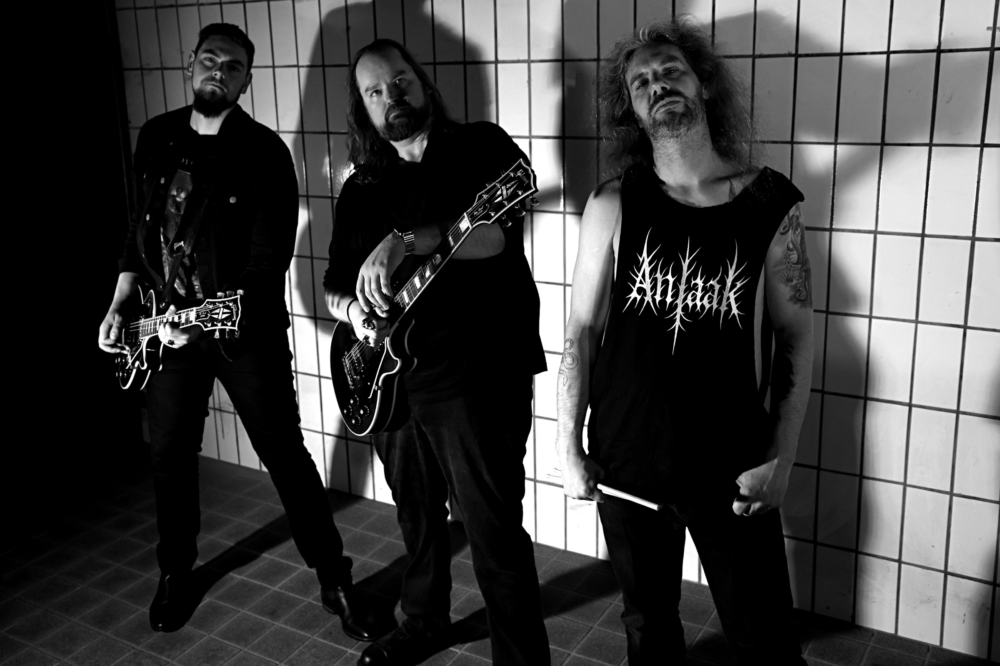
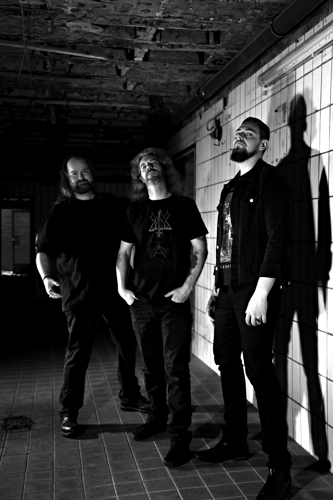

Monolith
Rhythmusgitarre, Bass-Zweig und Drums als geschlossene Wall of Sound.


Doom Death Metal · seit 2024
Tief gestimmt. Körperlich schwer. Melodisch aufgerissen. Musik über Dogmen, Leere, Sucht und menschliche Konsequenz.
In die SchwereSchwere. Vernunft. Widerstand.
Anlaak verbindet langsame Doom-Schwere, Death-Metal-Wucht und progressive Melodien. Nicht schneller oder dichter um jeden Preis: Jeder Ausbruch muss Gewicht, Bedeutung oder Fallhöhe erzeugen.
Rhythmusgitarre, Bass-Zweig und Drums als geschlossene Wall of Sound.
Schleppende Bewegung, Wiederholung und Raum bauen den Druck auf.
Growls, Shouts, harte Akzente und Breakdowns setzen ihn frei.
Leadgitarre und Melodie öffnen Gegenbewegungen in der Masse.

Three bodies.
One consequence.
Eine gebrochene Les Paul. Drei Musiker.
2024 suchte Götz Mitstreiter für Doom Metal nach einem einfachen Grundsatz: low and slow. Lukas meldete sich. Beim ersten Treffen brach der Headstock seiner Les Paul – und aus dem Wort für dieses Unglück entstand der Name Anlaak.
Mit Micha wurde das Trio vollständig. Seit 2025 entsteht die Musik im Keller eines ehemaligen Schlachtbetriebs: Fliesen, Beton, Enge und Nachhall – der reale Ort hinter dem Klang.
Keine Götter.
Keine Gegengötter.
Keine Erlösung als Abkürzung.
Booking · Presse · Zusammenarbeit
Offizielle Kontaktadresse, Streaming- und Social-Links werden nach Freigabe hier ergänzt.
Nach oben